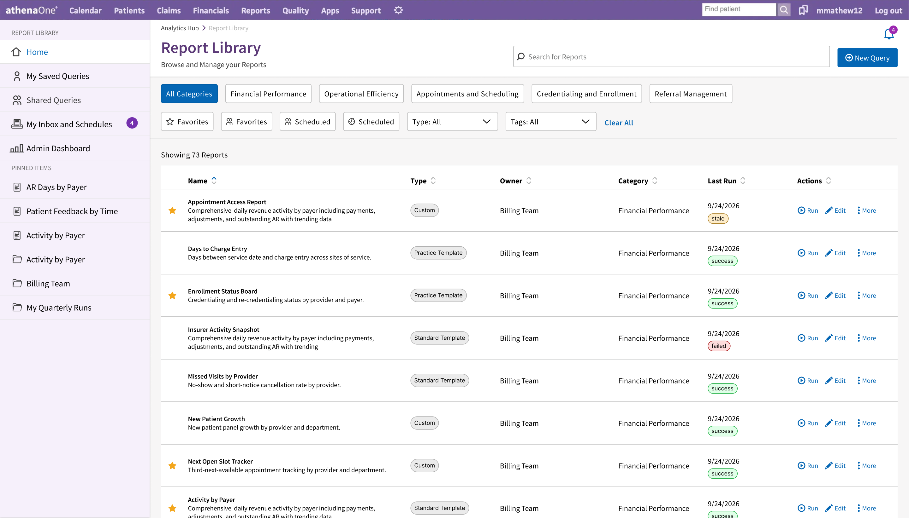
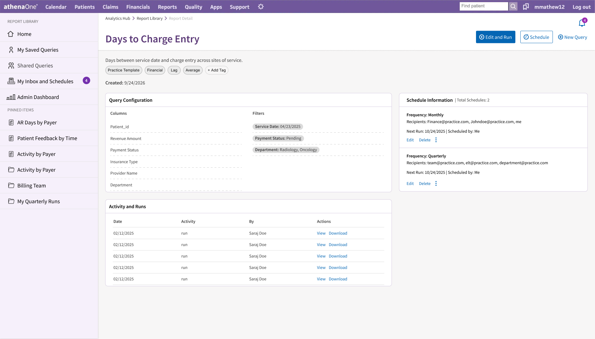
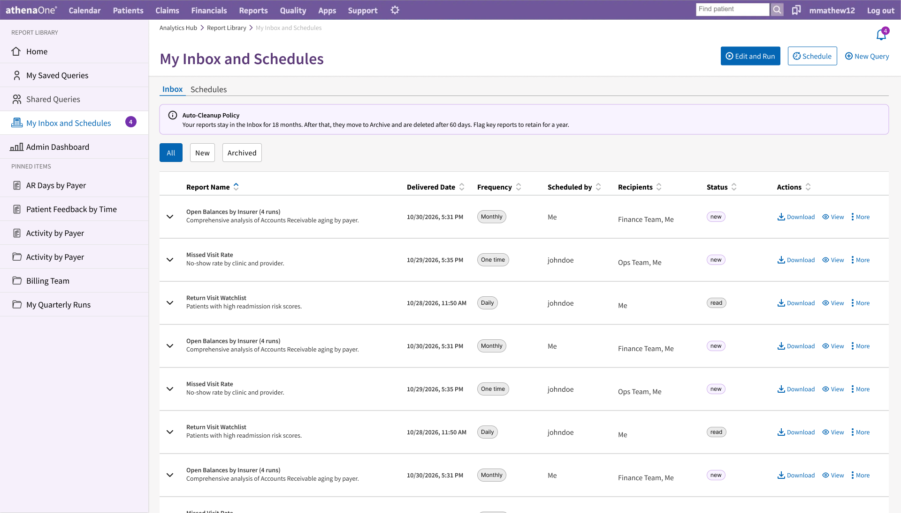
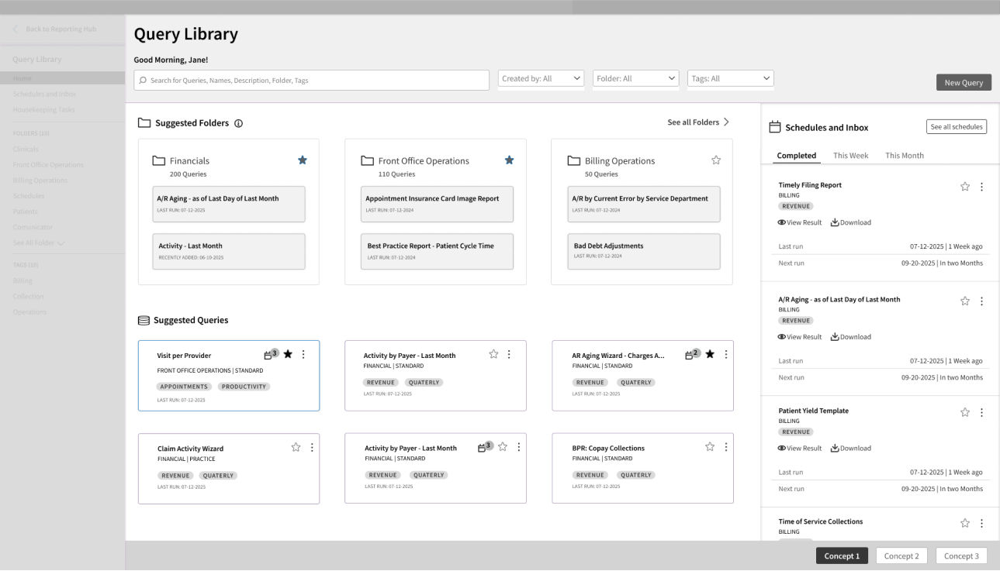
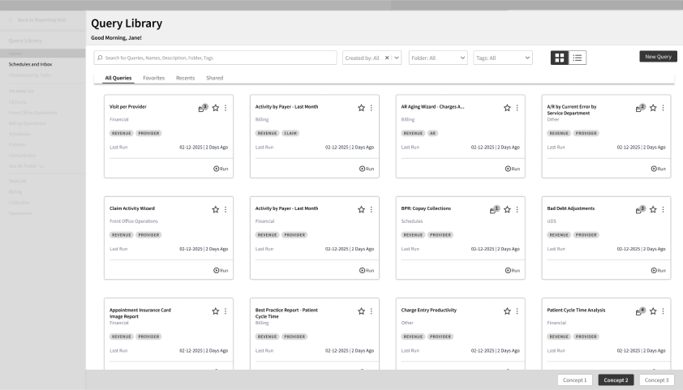
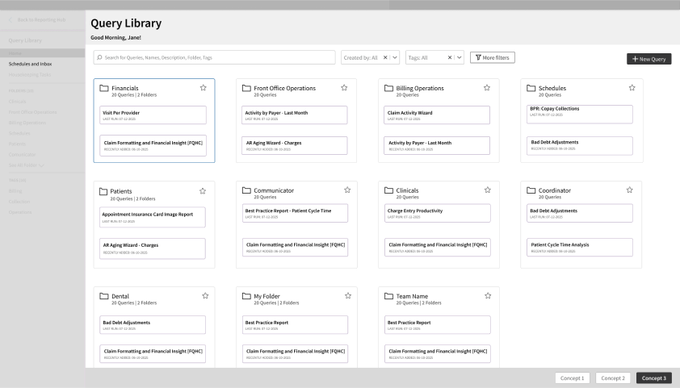

Find the right report
Category browsing, search, and filters work alongside report descriptions, ownership, and run status.
Helping people find, understand, and confidently reuse reporting content.
Turning a search problem into a coherent experience across discovery and the reporting lifecycle.
Explore the screens
Category browsing, search, and filters work alongside report descriptions, ownership, and run status.
Query configuration, schedule information, and run history bring the report’s context together.

Delivered outputs retain their schedule, recipient, and status context, with retrieval actions in the same view.

In a mature reporting catalog, users needed to locate relevant content, understand what it contained, and decide whether to reuse it. Schedules, generated results, ownership, and stale content added an ongoing management problem.
A growing catalog and inconsistent naming made relevant content difficult to locate.
Descriptions, definitions, and configuration details helped users judge relevance before running a report.
Frequently used content needed a dependable route back.
Recurring schedules and their outputs needed to remain understandable over time.
I used research and concept exploration to investigate the needs behind feature requests. When users could not confidently find or trust an existing report, creating another one could become the workaround.
Voice-of-customer input and synthesis helped separate requests from underlying needs.
Market study and three resonance concepts explored different ways to organize reporting.
Discovery, comprehension, and lifecycle management became connected design concerns.
Resonance testing used alternative concepts to investigate expectations and workflows. These were learning tools rather than three approved product strategies.
Explore frequently used folders, recent activity, and visibility of ongoing work.

Explore quick access through Favorites, Recents, and Shared content.

Explore category browsing followed by inspection of an individual query.

Original company concept screens, supplied by the designer for this local presentation.
The direction retained a familiar table/list foundation while improving how people found, evaluated, organized, and managed reporting content.
Preserve browsing patterns users already understood.
Expose descriptions, ownership, metadata, and query context before running.
Distinguish a small quick-access set from a broader Favorites collection.
Connect discovery and use with scheduling, retrieval, and maintenance.
I evaluated the direction with end users through RITE testing. The core workflow and mental model held up; iteration addressed terminology, metadata, permissions, report identification, and action placement.
Locate a report and inspect the context needed to decide whether to run it.
Create a schedule, find the resulting output, and return to manage the schedule.
Investigate reporting content that may need attention, using ownership and activity signals.
The unit of design was the reporting lifecycle, rather than an individual screen.
I connected the experience principles to a staged roadmap and facilitated MVP prioritisation with Product. Product retained final approval. The handoff included a functional prototype, acceptance criteria, and scoped priorities.
A research-informed experience with qualitative validation and identified refinements.
A prototype and implementation guidance connected the direction to engineering work.
In deployment when I left. Launch remains unconfirmed; production impact is not claimed.
This project strengthened how I connect research, interaction decisions, and prioritisation across a product system.
Let’s talk about the work